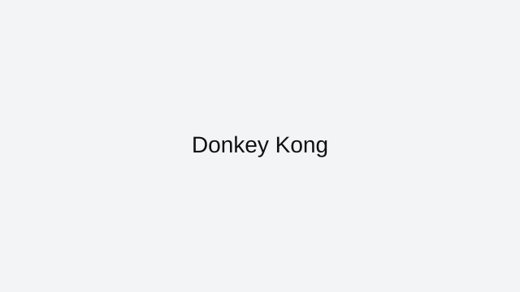

Donkey Kong is a browser-friendly arcade game on ArcadeZone that plays instantly in your web browser. This page explains the core rules, the best way to approach each session, and how to enjoy Donkey Kong without downloads or extra installs.
This browser version of Donkey Kong fits the category of classics games that are built for fast playing and repeat sessions. Classic arcade games are included for nostalgic play and simple, addictive gameplay that works everywhere.
Controls are simple enough for quick games and satisfying enough for longer play. Enjoy quick, reactive controls that keep you focused on score and timing. You can play Donkey Kong on desktop or mobile, depending on the browser and the page version.
To improve in Donkey Kong, focus on the most important idea for the genre: arcade games often reward good timing, pattern recognition, and steady progress. This page also includes practical tips that help you find the right pace and avoid common mistakes while playing. If you enjoy arcade games, try Space Invaders, Breakout, and Frogger next. All of these are listed on the ArcadeZone All Games page for quick access.
ArcadeZone keeps this Donkey Kong page clean and easy to use, with a strong focus on playability and helpful guidance. Bookmark this page if you want faster access to Donkey Kong and other browser classics from the ArcadeZone collection.
Donkey Kong is featured here because it offers a polished browser experience with fast loading and easy access from any modern device.
This page also covers what makes Donkey Kong work well online and how to get the most out of every session.
When you want a quick game break, Donkey Kong delivers simple play mechanics and satisfying goals without distractions.
Each section on this page is designed to help you understand the controls, learn good strategy, and avoid common mistakes.
What you'll love
Instant browser access with no downloads or installations required.
Enjoy a nostalgic arcade experience with a classic Donkey Kong play style.
A clean, mobile-ready page helps you learn the controls and start playing immediately.
Game essentials
Category: Classics
Game type: Arcade
Best for: nostalgic arcade gameplay
Controls: simple, responsive controls for classic gameplay

Screenshot: Donkey Kong
How to play
This classic game uses simple controls and quick reflexes. Use arrow keys or one-button input to play.
Tips & Tricks
Classic games often reward consistency and timing more than quick reactions.
Focus on the core rule set first — then begin trying higher scores or faster completion.
Remember that many classic browser games are all about pattern recognition.
Play
If the game embeds elsewhere, link to the source or use an embed iframe with proper attribution.
ArcadeZone provides this page as a guide to Donkey Kong. Wherever possible, we link directly to the game’s browser-ready version and credit the original creators. If you want more browser game recommendations, visit the All Games page.